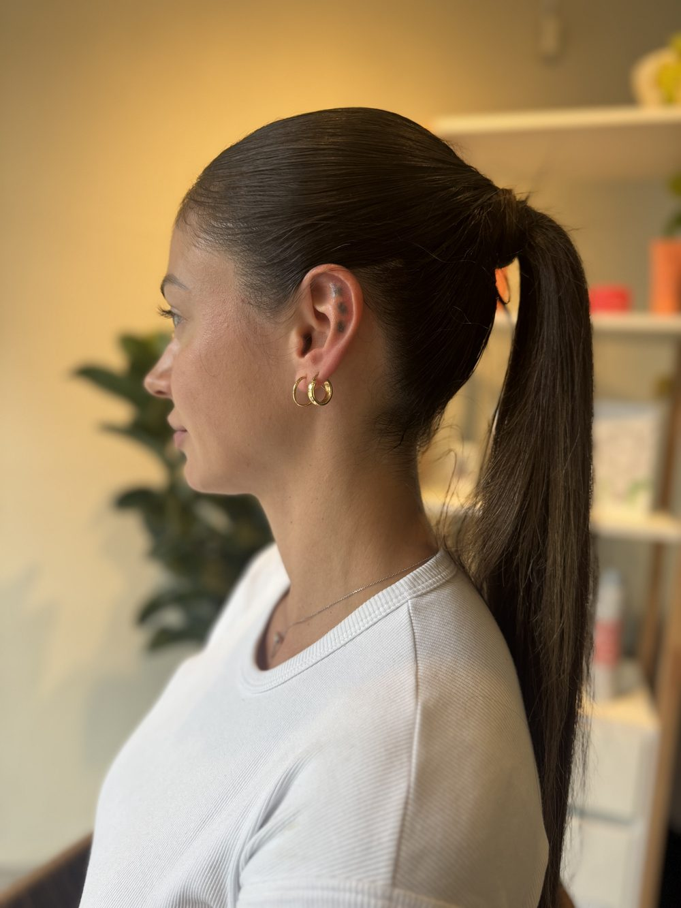
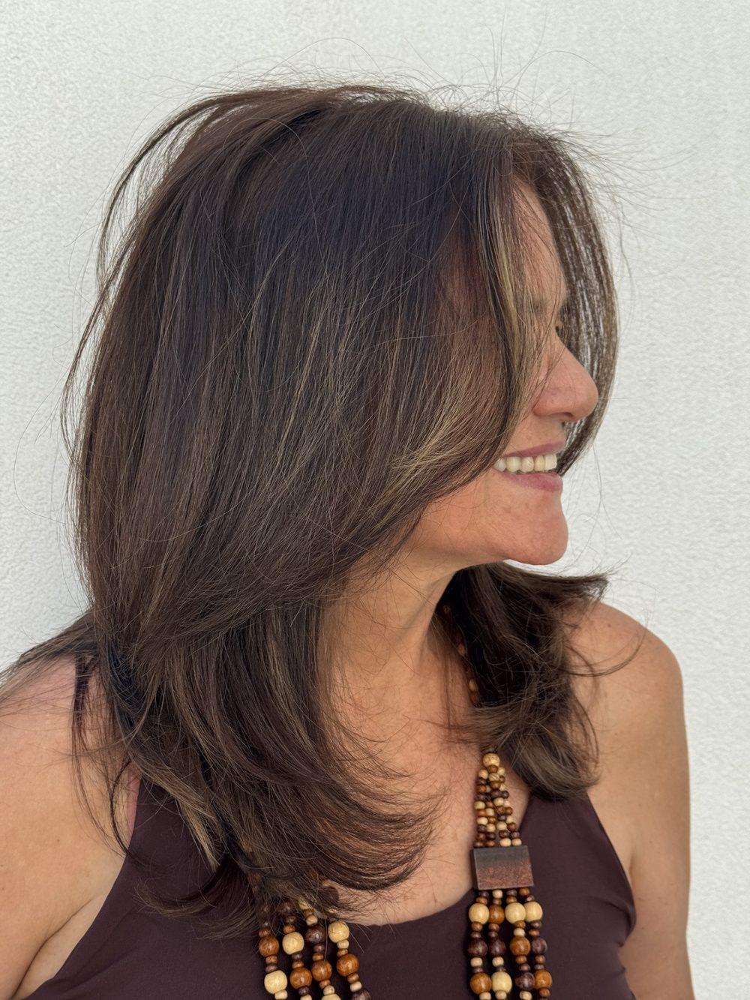
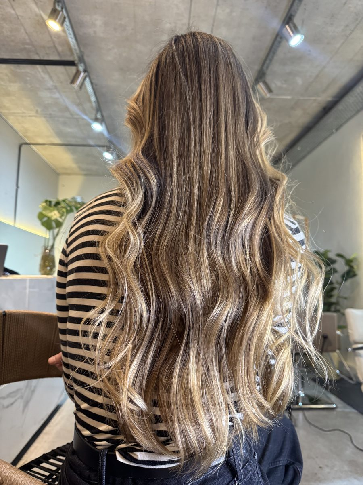
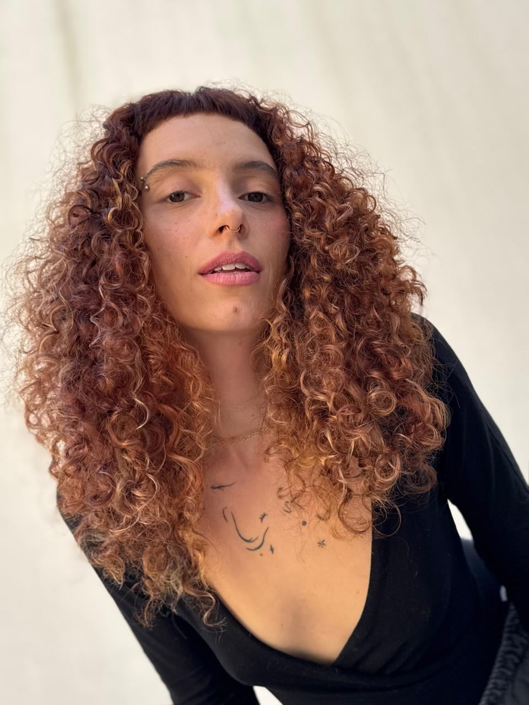
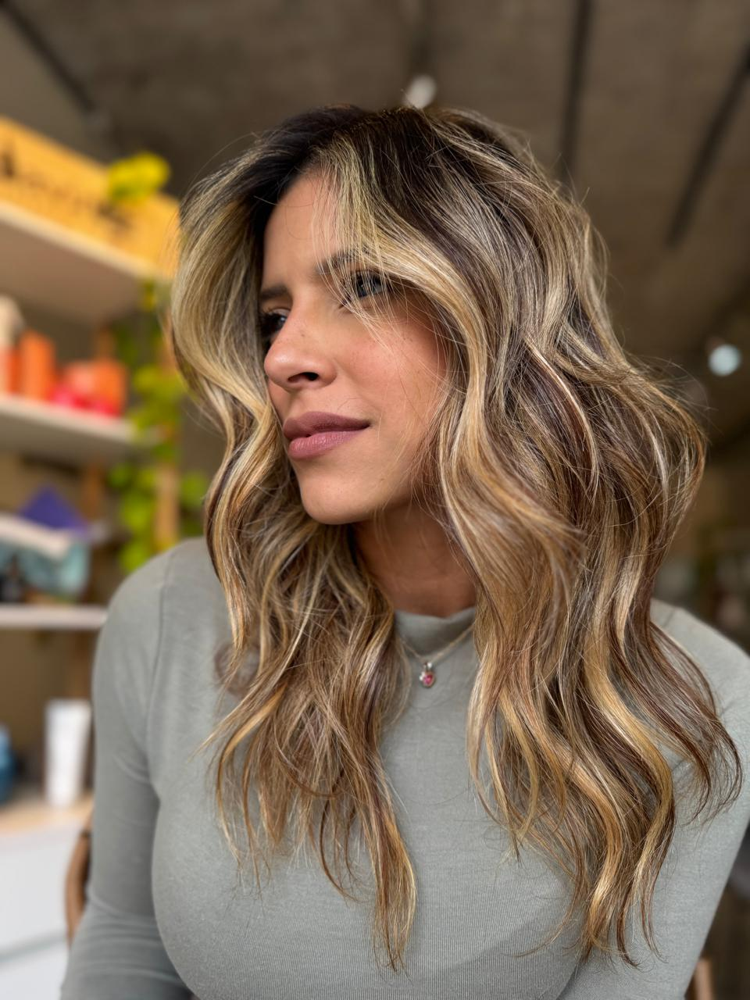
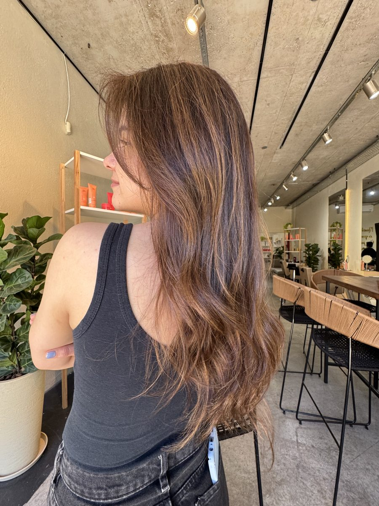
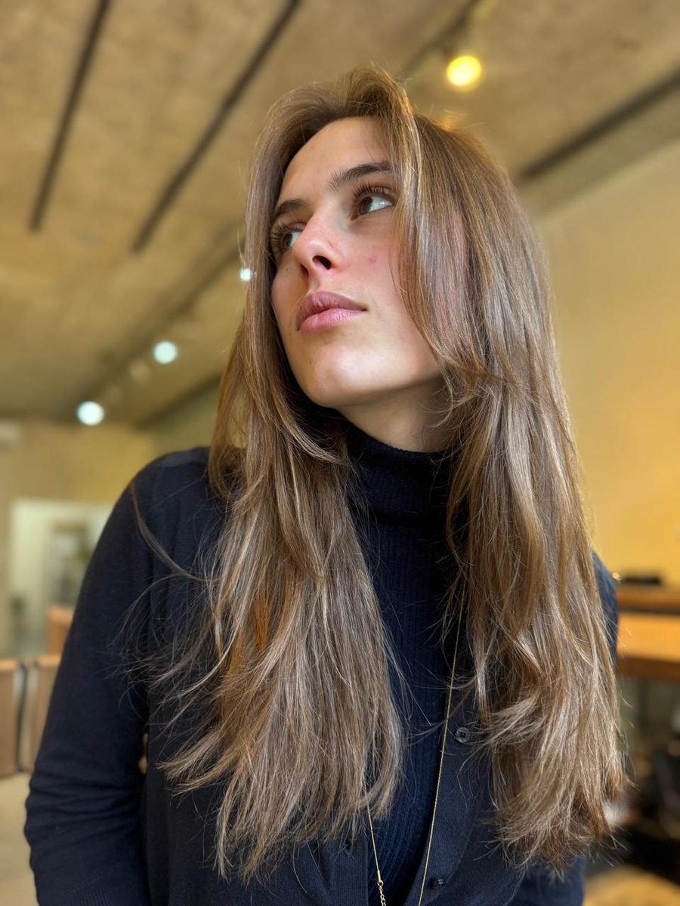
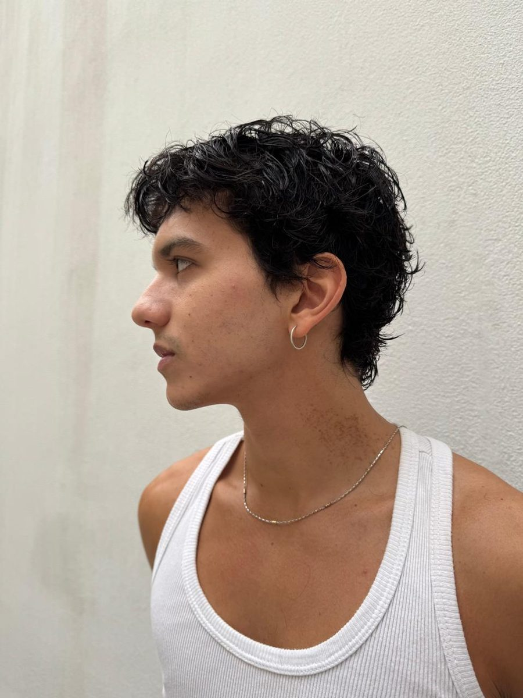
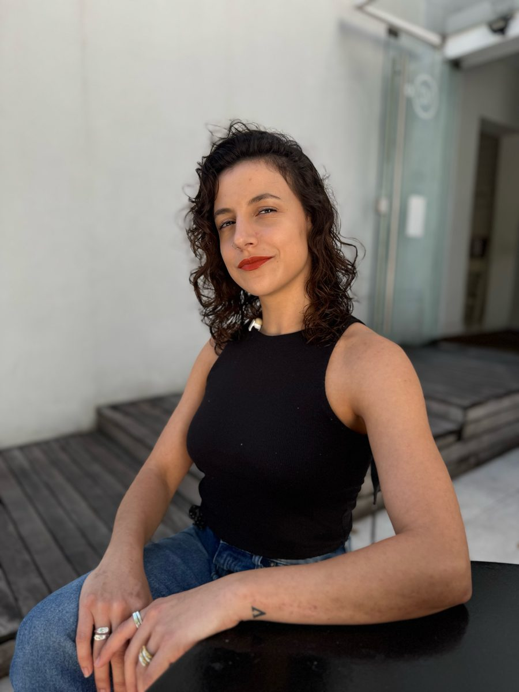
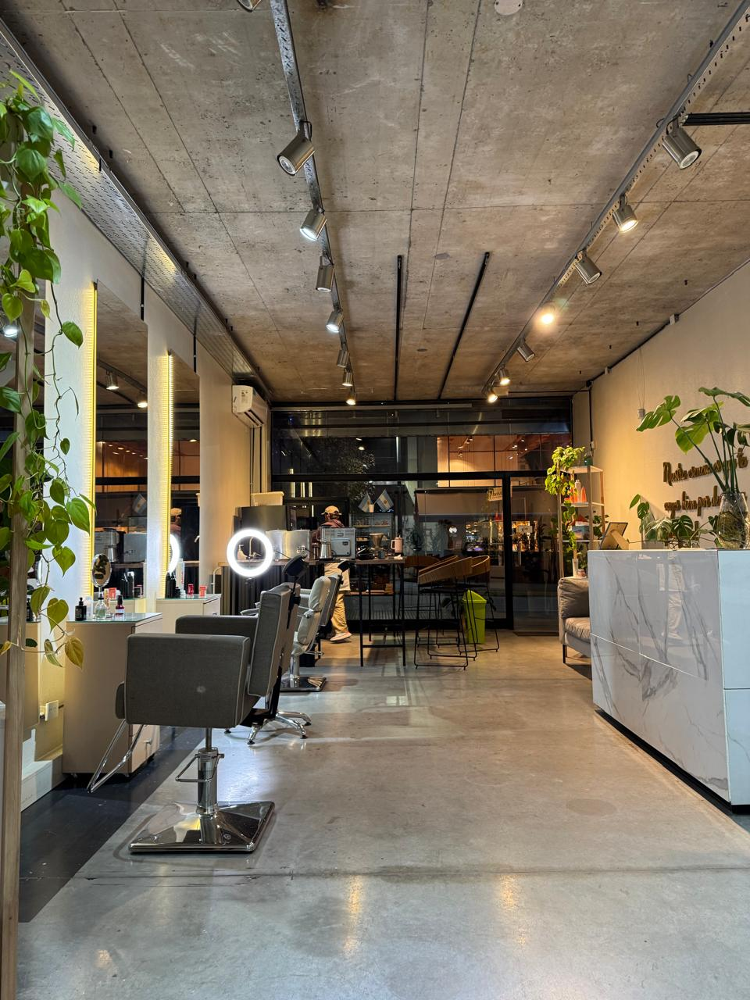

Peluquería · Palermo Soho
Cabellos que reflejan tu mejor versión
Mary Fernández atiende personalmente cada servicio. Sin modas ni estereotipos: se trabaja sobre el cabello que tenés y sobre lo que le hace bien.
Reservar turno por WhatsAppGorriti 4735 · Con turno reservado

Nosotros
Un salón,
una sola persona
en el espejo
Closer Peluquería está dirigida por Mary Fernández, que atiende personalmente cada servicio, con Facu como asistente.
El salón existe para acompañarte a sentirte mejor con vos misma a través del cuidado y la salud de tu cabello. No se trabaja siguiendo modas ni estereotipos: se trabaja sobre lo que tenés y sobre lo que querés, y se dice con honestidad qué le conviene a tu pelo.
Por eso hay una sola forma de reservar: con turno. El tuyo es tuyo, y alcanza para conversar antes de decidir.

Nuestra identidad
Cómo trabajamos
-
La salud primero
El estado del cabello manda por encima de la tendencia del momento. Si algo no le va a hacer bien, te lo decimos antes de empezar.
-
Atención al detalle
Cada servicio se hace con dedicación y sin apuro. El resultado se mira de cerca, mechón por mechón, hasta que está.
-
Autenticidad
Valoramos que cada clienta se parezca a sí misma. El vínculo se construye con confianza y cercanía, visita a visita.
Servicios
Lo que hacemos
Servicios
- Corte damas secado incluido $ 46.900
- Corte masculino $ 32.000
- Corte niños $ 28.000
- Lavado según el largo $ 6.500 / $ 9.900
- Ampollas $ 26.000
- Máscaras
- HairTherapy $ 24.900
- Framesi $ 36.900
- L'Oréal $ 42.900
- Davines $ 49.900
- Brushing $ 32.900 *
- Peinado suelto $ 42.900 *
- Peinado recogido $ 60.000 *
- Maquillaje social $ 42.900
Servicios técnicos
- Color con amoníaco solo raíz · según el largo · Wella / Schwarzkopf $ 49.900 / $ 99.800 *
- Color sin amoníaco solo raíz · según el largo · Wella / Schwarzkopf $ 58.900 / $ 117.800 *
- Mechas, balayage e iluminación $ 180.000 *
- Botox y cauterización sin formol $ 42.900
- Shock de keratina sin formol $ 60.000 *
- Alisado sin formol $ 75.000 *
* A partir de ese valor. Varía según la cantidad de producto que se utilice.
Donde ves dos precios es un rango: el valor exacto depende del largo de tu cabello y se define en el análisis, antes de empezar. Si tenés dudas con alguno, escribinos y te lo pasamos antes de reservar.
Trabajos
Hecho en Closer
Todo lo que ves acá salió de este salón.







Hay más en @closer_peluqueria

El salón
Adentro
Un local a la calle en Gorriti, con hormigón a la vista, plantas colgando y los puestos alineados frente a los espejos. La luz es cálida y el ritmo, tranquilo.
- Dirección
- Gorriti 4735
Palermo Soho, CABA - Horarios
-
Lun, mar, mié y vie · 10:00 a 19:30
Jueves y sábado · 10:00 a 17:00
Domingo cerrado
Reseñas
Lo que dicen las clientas
-
Excelente trato! Entendió perfectamente lo que quería y el resultado fue justo lo que buscaba. Sin dudas volvería.
-
Pedí al Chat GPT peluquería cerca de donde me encontraba y me recomendó CLOSER, coirdiné por watsap, me pasaron catálogo de precios.. y el resultado fue un 10!! Gracias! Volveré!
-
Calidez y calidad técnica de Mari y Facu. Muchas dedicación y mimo. Super recomendable. Gracias
-
Te dan turno y cuando llegas te están esperando a vos solo. El lugar totalmente limpio, te atienden de 10. Excelente todo y con muy buena onda. Super recomendable.
Están copiadas tal cual las publicaron en Google, sin corregir ni acortar. Verlas en Google